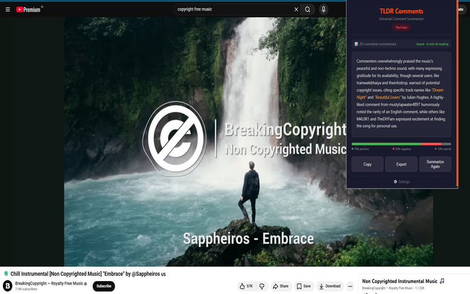

YouTube comments are chaotic. Find out what viewers actually think in seconds — without scrolling through hundreds of comments.
Add to Chrome — Summarize YouTube Comments for FreeYouTube lazy-loads comments as you scroll, making them hard to read all at once. TLDR Comments has a dedicated YouTube scraper that automatically scrolls and loads comments for you, then sends them to your AI provider for summarization.
Open any YouTube video, click the TLDR Comments icon, and get the summary. It's that simple.

YouTube comment sections are a mix of reactions, opinions, jokes, and spam. Scrolling through them takes forever, and the best comments are often buried. TLDR Comments gives you the gist of what viewers think — the key reactions, common opinions, and notable insights — in a clean summary.